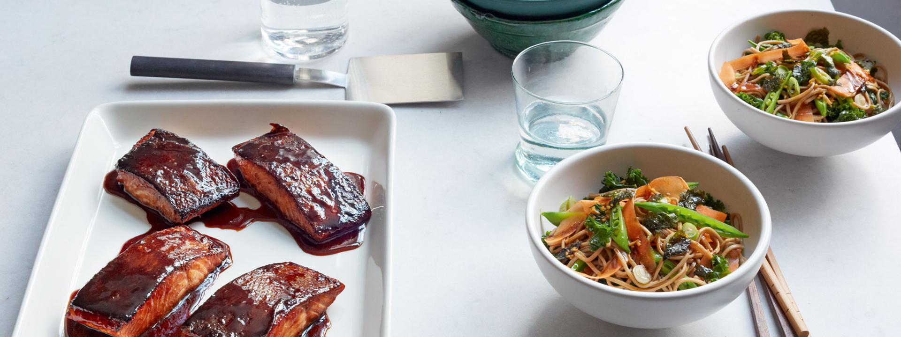

Cooked salmon evenly to be qualified as teriyaki salmon
Including raw salmon will bring the wrath upon you
INGREDIENTS
- 2cm piece of fresh root ginger, finely sliced
- 2 garlic cloves, peeled and finely sliced
- 3 tbsp soy sauce
- 2 tbsp maple syrup
- 1 tbsp mirin (rice wine)
- Olive oil
- 4 salmon fillets (about 500g in total)
- Sea salt and freshly ground pepper
COOKING INSTRUCTIONS
- Put the ginger and garlic into a bowl and mix with the soy sauce, maple syrup, mirin and a drizzle of olive
oil.
- Place the salmon fillets in a dish, season with salt and pepper and pour the sticky dressing over them.
Cover with cling film and set aside in the fridge to marinate for up to 2 hours, but at least 20 minutes.
- Place a large frying pan over a medium heat and add a dash of oil. When hot, add the salmon, skin side down,
reserving the marinade. Cook for 2 minutes, then pour in the reserved marinade and cook for
a further minute or so, until the salmon fillets are opaque halfway up the sides. Turn them over and cook on
the other side for 3–4 minutes, basting with the sauce so that the salmon is well coated. Add a splash of
water if the sauce is too thick.
- Serve the salmon fillets on individual plates, spooning over any teriyaki sauce left in the pan.
Return to Top
Return to the Collections